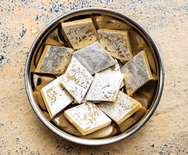

Kaju Katli

Description
Perfect Kaju Katli or Kaju Barfi is a traditional Indian cashew fudge candy that's terrifically smooth, thin, and melts in your mouth. This lovely treat includes a hint of rose but is completely customizable with your favorite flavors. And while it's not the easiest recipe to make from scratch, I promise it's worth every bit of effort!
Ingredients
- 1 cup cashews (whole) - 160 grams, at room temperature
- 1/2 cup sugar - 100 grams
- 5 tablespoons water
- 1 tablespoon Ghee or coconut oil or any neutral tasting oil, optional
- 1 teaspoon chopped rose petals or 1 teaspoon rose water or 8 to 9 strands of saffron, optional
Steps
- Place 1 cup cashews (kaju) in a dry grinder or coffee grinder or blender.
- Grind the kaju to a smooth powder, making sure you don't over do the grinding process as fat should not release from the cashews.
- Combine 1/2 cup sugar and 5 tablespoons water in a thick bottomed pan (or kadai or a non-stick pan).
- Keep on low flame and let the sugar dissolve in the water. There is no consistency in the sugar syrup like one string or two string. Simply let the sugar dissolve in the water and then proceed with the next step.
- When the sugar completely dissolves in the water, add the cashew powder.
- Stir and keep on stirring non-stop on a low flame. If there are lumps then break the lumps as you stir and continue to stir. This consistent stirring is the key for a smooth and even kaju katli dough.
- The mixture will thicken and start coming together to form a very soft dough. Then it is time to remove the whole lump of the mixture from the pan and place it on a work surface.
- Put the entire cashew dough on a work surface. Add 1 teaspoon rose petals (or 1 teaspoon rose water or 8 to 9 strands of saffron) and 1 tablespoon ghee or coconut oil. The addition of rose petals and coconut oil or ghee are optional.
- Knead the dough lightly, flatten it and place it on a greased plate or tray. Don't overdo kneading as this will release fat from the cashews. The grainy texture in the dough goes away as you knead it. Remember the dough should be hot while kneading.
- You can also place it on a large piece of parchment or butter paper. The cashew dough should still be quite warm when you start rolling it. As it cools it will harden more and then becomes difficult to roll, so work quickly!
- To smoothen the cracks, place parchment paper on top and roll more. This will fill in the cracks and the kaju barfi will have a smooth finish.
- Roll to get a thickness of about 3 to 5 mm. Then let the rolled cashew dough cool.
- Once cooled completely, cut the cashew dough into squares or diamond shapes. Scrape off the uneven edges and enjoy as a little snack as you work.